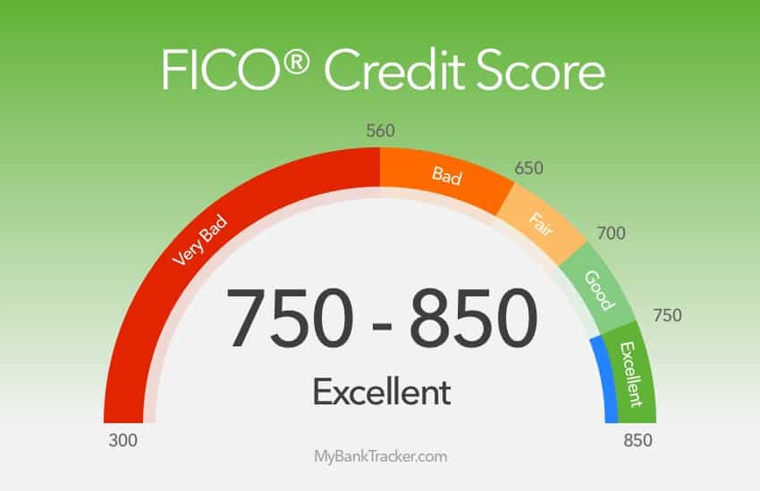
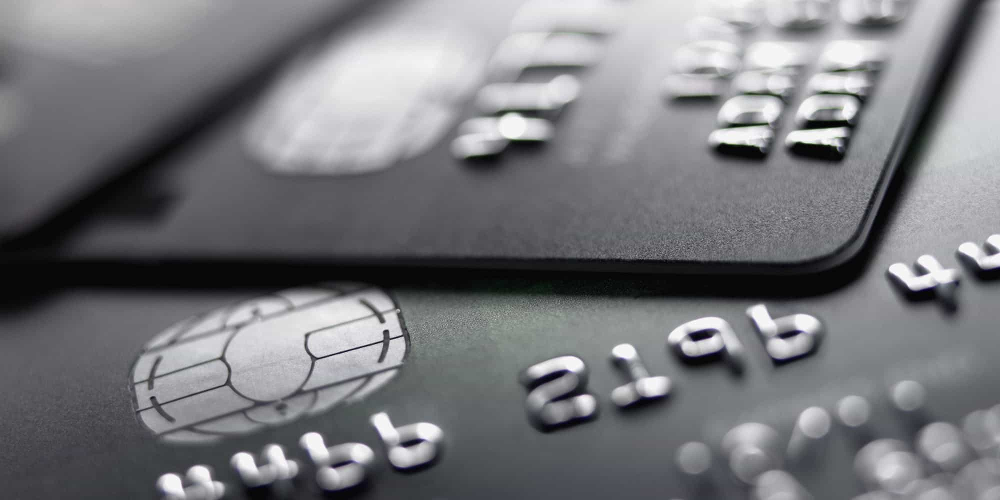

Kyle is an entrepreneur and nomad who has been living abroad since 2016. He blogs at This Is Trouble. Follow him on Facebook.


You’ve probably heard of “miles hacking” by now. You know, the silly nerds who are obsessed with racking up hundreds of thousands (or millions) or airline miles, hotel points, and other credit card reward program currencies.
So, confession: I’m one of them.
Of course, most of those people spouting the advice are also dropping affiliate credit card links in those same posts showcasing you how they’re staying in a $1,000 per night hotel room free of charge.
Having been a bit of a junkie for a few years myself now, I thought I’d shed some insight light on the situation. Without further ado, here are seven things you must know about credit card point collecting.
I’m sitting on a bank of over 500,000 miles at this point in my life. I’ve been on the road full-time as a digital nomad for nearly a year, and miles have funded nearly all of the costs of my travels at this point.
So, move past your doubts. Right now. It does work, so this now becomes a matter of setting yourself up for success with a system. Because there are a lot of things that can go wrong. There are requirements to making it work for YOU, which we’ll dive into.

You can’t be stupid. If you’re the type to forget to cancel things, or are prone to paying your bills on time—forget it. You’ll get hit with hundreds, if not thousands, of dollars of annual penalties and fees that will put a real dent in the glory of flying for free.
You must be organized in the process.
The real gist of the entire “game” is this:
You open a credit card. You spend X amount of dollars and receive Y amount of points. Typically, Y is worth several hundred dollars, whereas an annual fee is around $100 (though it does vary quite a bit).
So how do the credit card companies make money, when they’re practically giving away a currency (points) for free?
Because they’re counting on YOU to not pay things on time, to spend more than you can afford, and to forget to cancel the card (and therefore miss the annual fee after your year is up).
Don’t be the person who does one of those, much less ALL of them.

Another common hangup is that this will hurt your credit.
First off, another rule: if your credit is below 700, you don’t really have the capacity to be playing this game. Get your credit up, then come back and consult this article. For those of you who have a credit score above 700—the truth is that you will see ebbs and flows as you play the credit card game.
When I started in January of 2015, I had a credit score of 760. Over the course of the next year (as I opened 10+ credit cards), the lowest it ever got was 707. Now, in October of 2016, it’s 787. It should be noted that I haven’t really opened any since I started my journey as a location independent digital nomad.

You wouldn’t put your entire savings into one stock, would you?
Your credit card points should work exactly the same. Just last year, I was sitting on a nice pile of nearly 250,000 American Airlines miles. Then, American made the decision to raise the reward prices across many of their regions. Suddenly, the value of those points dropped significantly.
Fortunately, I was on the verge of booking a very large trip for multiple people (more on that below).
But what if I hadn’t been?
What if my 250,000 miles had suddenly had their value cut and I had no way to get rid of them? Talk about being on a sinking ship.
The point is, don’t put all your eggs in basket. This can be applied to most things in life, credit card gaming is no different.
I waited to share this part last, and it’s a little cheesy. But this little game of miles hacking has allowed me to do some pretty remarkable things for my family.
Just this year, I coordinated getting four of us living across three different continents for a two week trip around Europe. The value to fly my parents from the United States to Venice, Italy would have normally been $2,500 one way—each.
Instead, they just paid the $150 in taxes each.
I redeemed enough points to get everyone flights, that, if had been bought in outright cash, would have exceeded well over $10,000. Sure, there is always the “make more money” option—but that isn’t always feasible.
And when you are making (and therefore, spending) enough money that you can afford a $10,000 flight—you should be making miles on that, anyway!

It’s completely silly, but some credit cards are really cool. Something like a Chase Sapphire is 100% metal, and feels SOLID when you hold it in your hand. An AMEX gold card with your business on it looks cool, too.
…and girls notice this stuff.
Unless she’s looking for a sugar daddy, she won’t say anything—but if you just “happen” to leave it out in clear view while waiting for the waiter to pick up the bill—watch her eyes.
This only works with the high-end cards that signify status.
And sometimes, the dating game is so tough in America that you need every edge you can get.
If you’ve had your doubts about using credit card miles, opening multiple new credit cards, and are confused on how to use them—I don’t blame you. There is an information overload out there. The fact of the matter is, it does work. But you need to be careful, be well organized, and to plan properly to use them.
But if you do all of that, the world is truly your oyster.
Read More: How You Can Fly Anywhere In The USA For Less Than $50